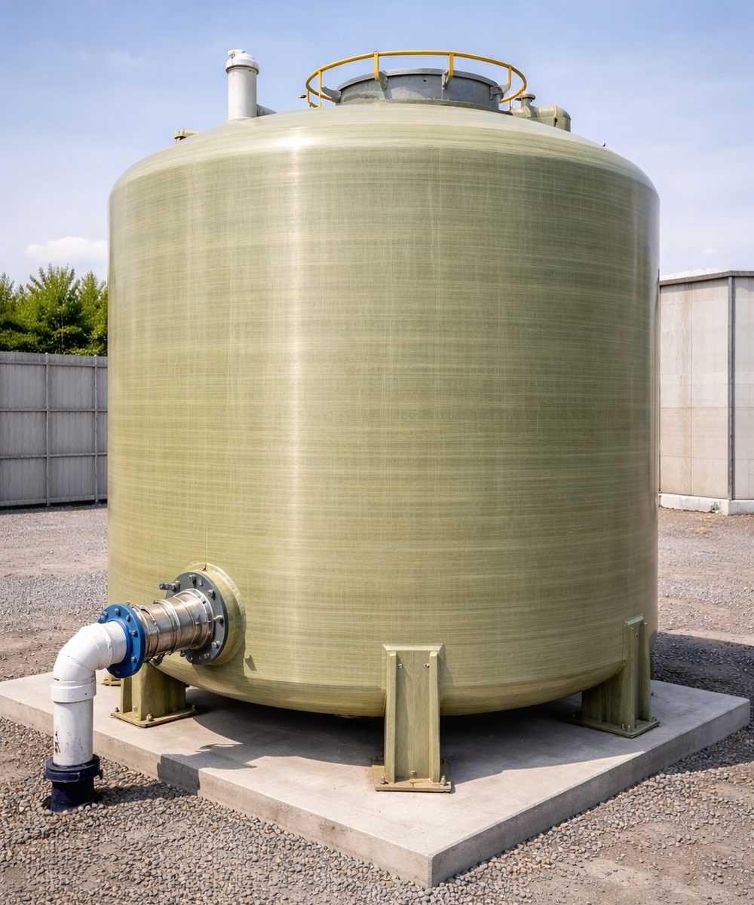

Engineered water storage & piping
Reliable supply solutions tailored to project requirements, with consistent quality, long service performance and on-time delivery.

FRP Round Tank
FRP (Fibre Reinforced Plastic) round tanks in open and closed top configurations, designed for reliable performance across industrial and utility sectors, with excellent durability, corrosion resistance and long-term service life. Engineered to withstand harsh environments and aggressive media with low maintenance requirements.
Applications
- Sewerage systems
- Process industries
- Water treatment and storage
Key features
- Excellent resistance to corrosion and chemicals
- Lightweight yet strong construction
- Suitable for harsh and aggressive environments
- Open or closed top configurations
- Long service life with minimal maintenance
A dependable and cost-effective storage solution for sewerage, process and water applications.

GRP Pipe
Glass Reinforced Plastic pipes engineered for durability, structural strength and superior corrosion resistance. Manufactured using advanced composite technology, GRP pipes offer consistent quality and suit projects requiring efficient installation and dependable service life.
Key advantages
- Excellent resistance to corrosion, chemicals and moisture
- High strength-to-weight ratio for easier handling and transport
- Long service life with minimal maintenance
- Suitable for indoor and outdoor installation
Applications
- Water supply and wastewater systems
- Sewerage and drainage infrastructure
- Industrial, process and utility applications
Supplied to meet project specifications, with consistent quality, performance and on-time delivery.

Sectional Panel Tanks
High-quality sectional panel tanks for reliable water storage in residential, commercial and industrial applications. A modular panel system allows flexible sizing and efficient installation to suit various site requirements, while maintaining compliance with project specifications and water industry standards.
Available materials
- HDG (Hot-Dip Galvanized Steel) — durable and corrosion-resistant, suited to outdoor and utility installations
- SS (Stainless Steel) — hygienic and long-lasting, ideal for potable water
- FRP (Fibre Reinforced Plastic) — lightweight, corrosion-resistant, low maintenance
- GRP (Glass Reinforced Plastic) — high strength and chemical resistance for harsh environments
Key features
- Modular design for flexible tank capacities
- Strong and durable construction
- Suitable for potable and non-potable water storage
- Designed to meet industry standards and project specifications
Authorised dealer and installer for East Malaysia in partnership with Star Brothers Engineering Sdn. Bhd., with supply, installation and after-sales support.
Planning a pipeline or tank project?
Tell us your requirements and we will respond with a tailored solution and quotation.